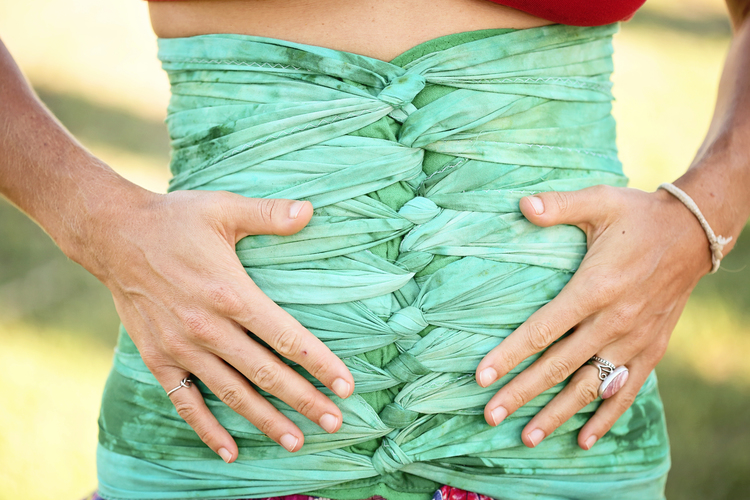
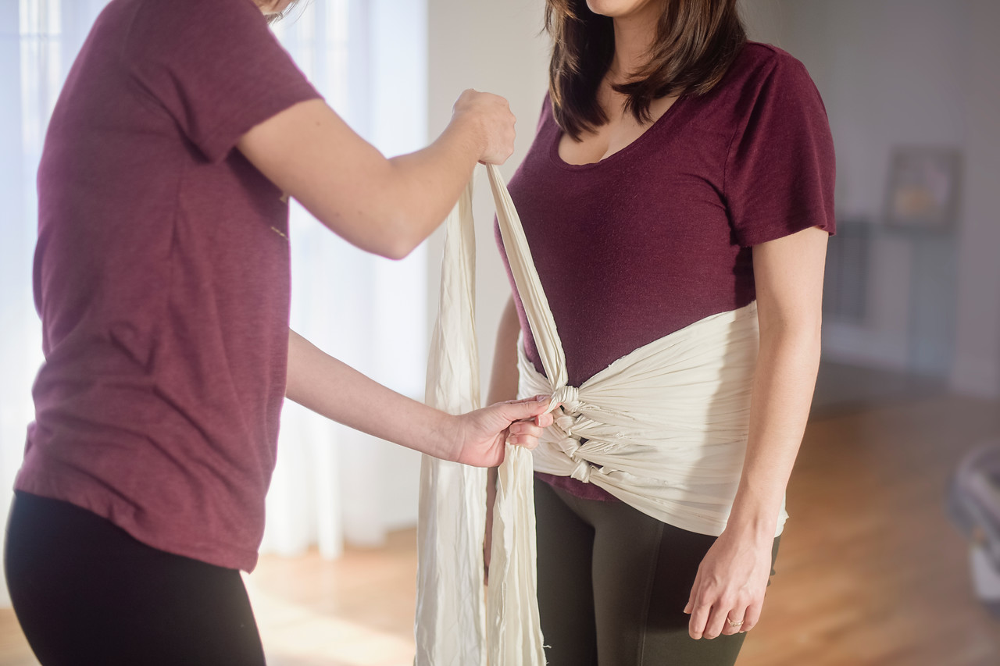

What is Bengkung Belly Binding?
Bengkung belly binding is the art of wrapping a postpartum women's belly for physical support and to help hasten the recovery process after childbirth. This belly binding technique uses a long strip of cloth to wrap around the abdomen from the hips to the ribcage.
Why is it needed?
Pregnancy hormones cause the tissue to stretch and thin so the belly can expand, and the growing uterus pushes the muscles apart. As a result, the muscles may not fully come back together after pregnancy, causing a lingering belly bump. It can also lead to other problems, such as back pain, poor posture, and a weak core. Belly binding can help to hold the muscles together and speed up that closure.
When to start Bengkung belly binding after giving birth?
For those normal delivery, it should be starting in 6-8 weeks after giving birth until the lochia is clear. For those with surgery, should wait until the wound is fully healed. The golden period to do belly binding is 42 days to 6 months after giving birth. The ideal period is from 6 months to 18 months after giving birth. The Validity period is from 18 months to 6 yeards after giving birth.
